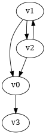

数据结构算法拾遗
1 链表
1.1 LRU缓存
- 配合哈希表实现
1.2 带头链表
- 利用哨兵节点(无数据的头节点)
1.3 边界条件检查
- 如果链表为空时，代码是否能正常工作？
- 如果链表只包含一个结点时，代码是否能正常工作？
- 如果链表只包含两个结点时，代码是否能正常工作？
- 代码逻辑在处理头结点和尾结点的时候，是否能正常工作？
2 树
2.1 定义
树是 \(n(n\ge 0)\) 个结点的有限集。
- 有且仅有一个 Root 的结点
- 同级结点不存在逻辑关系
2.2 存储结构
2.2.2 孩子表示法
- 方案一
每个结点都保存与树的度相等的孩子指针域。
data child1 child2 … childn 会造成空间浪费
- 方案二
每个结点增加一个字段保存该结点的度，
需动态分配每个结点的指针域空间。
data degree child1 child2 … childn 维护 degree 会有一定的代价。
- 孩子表示法
每个结点的孩子们以单链表的形式排列起来。
而结点又通过顺序表存储。
digraph tree { rankdir=LR; node [shape=record fontsize=14 width=0.2 height=0.3 fontname="Inconsolata"]; edge [tailclip=false]; a [label="{Nodes}|{{index|0|1|2|3|4}|{data|A|B|C|D|E}|{firstchild|<ref1>|<ref2>|^|^|^}}"]; b [label="{{child|3}|{next|<ref>}}"]; c [label="{ 2 | ^ }"]; d [label="{ 5 | ^ }"]; a:ref1:c -> b:data [arrowhead=vee, arrowtail=dot, dir=both]; b:ref:c -> c:data [arrowhead=vee, arrowtail=dot, dir=both]; a:ref2:c -> d:data [arrowhead=vee, arrowtail=dot, dir=both]; }找孩子只需遍历某个节点的孩子单链表
找父亲可以需要遍历整棵树，可结合父亲表示法，变为父亲孩子表示法
在 Node 结构中加入一个指向 Parent 的指针，用空间换取运行时间。
2.2.3 孩子兄弟表示法
| data | firstchild | rightsib |
该表示法无需链表，要找结点的某一个孩子，
首先通过 firstchild 找到第一个孩子，再通过孩子的 rightsib，
依次遍历所有的 sibling。
要快速查找父亲，与之前一样，可以结合父亲表示法。
2.3 二叉树
2.3.1 定义
二叉树是由一个根结点和 两棵 互不相交的子树组成。(子树可为空)
- 特点
- 树的度最多为 2
- 左子树和右子树是有顺序的，不能交换位置。即使只有一个子树，也要区分左右。
- 五种基本形态
- 空二叉树
- 只有一个根结点
- 根结点只有左子树
- 根结点只有右子树
- 根结点既有左子树又有右子树
- 特殊二叉树
- 斜树：所有结点都只有左子树，称为左斜树。
- 满二叉树：所有分支结点都有左右子树，所有叶子都在同一层上。
完全二叉树
如果对完全二叉树的每一个结点从上到下，从左到右进行编号。
如果每个结点的编号与满二叉树中的编号都一致，称为完全二叉树。
同样结点数的二叉树，完全二叉树的深度最小 。
完全二叉树
graph completetree{ size="2,2"; node [shape=circle fontsize=14 width=0.1 fontname="Inconsolata"]; "1" -- "2"; "2" -- "4"; "2" -- "5"; "1" -- "3"; "3" -- "6"; }非完全二叉树
graph notcompletetree{ size="2,2"; node [shape=circle fontsize=14 width=0.1 fontname="Inconsolata"]; 5 [shape=circle fontsize=14 width=0.1 color="grey" fontcolor="grey" fontname="Inconsolata"] "1" -- "2"; "2" -- "4"; "2" -- 5 [color="grey"]; "1" -- "3"; "3" -- "6"; }非完全二叉树
graph notcompletetree{ size="2,2"; node [shape=circle fontsize=14 width=0.1 fontname="Inconsolata"]; 3 [shape=circle fontsize=14 width=0.1 color="grey" fontcolor="grey" fontname="Inconsolata"] "1" -- "2"; "2" -- "4"; "2" -- "5"; "1" -- 3 [color="grey"]; }
2.3.2 性质
- 在二叉树第 i 层上至多有\(2^{i-1}\) 个结点。(数学归纳法证明)
- 深度为 k 的二叉树至多有\(2^k - 1\) 个结点。(数学归纳法证明)
- 对任何一棵二叉树，设叶子结点数为\(n_0\) ，度为 2 的结点数为\(n_2\) ，则\(n_0=n_2+1\) 。
总结点数\(n = n_0+n_1+n_2\)
分支线总数\(n_1+2n_2 = n - 1\)
\(n-1\) 是因为除了根结点，每个节点都有一根分支线连接起父亲。
- 具有 n 个结点的完全二叉树的深度为\(\lfloor\log{n}\rfloor + 1\) 。
截止到最后一层的所有结点数至多为\(2^k-1\)
截止到最后第二层的所有结点数至多为\(2^{k-1}-1\)
则有，\(2^{k-1}-1< n\le 2^k-1\)
因为 n 是整数，\(n\le 2^k-1\) 等同于\(n<2^k\)
同理 \(n\ge 2^{k-1}\) ，得到\(2^{k-1}\le n < 2^k\)
\(k-1\le\log n < k\)
因为 k 也是整数，\(\lfloor \log n \rfloor = k-1\)
- 完全二叉树性质
如果对一棵有 n 个结点的完全二叉树的结点编号，对任一结点(\(1\le i\le n\) )有：
- \(i=1\) ：根结点，无父亲； \(i>1\) ：父亲结点是\(\lfloor i/2 \rfloor\)
- 如果\(2i>n\) ：则结点 i 无左孩子，否则其左孩子是\(2i\)
- 如果\(2i+1>n\) ：则结点 i 无右孩子，否则其右孩子是\(2i+1\)
2.3.3 存储结构
2.3.4 遍历
二叉树遍历的次序是关键，影响效率。
graph binarytree{
size="2.5,2.5";
graph [ordering="out"];
"A" -- "B";
"B" -- "D";
"D" -- "G";
"D" -- "H";
"A" -- "C";
"C" -- "E";
"C" -- "F";
"E" -- "I";
}
TRAVERSE(Node)
if Node == NULL
return
前序遍历：ABDGHCEIF
print(Node.data)
TRAVERSE(Node.lchild)
TRAVERSE(Node.rchild)
中序遍历：GDHBAIECF
TRAVERSE(Node.lchild)
print(Node.data)
TRAVERSE(Node.rchild)
后序遍历：GHDBIEFCA
TRAVERSE(Node.lchild)
TRAVERSE(Node.rchild)
print(Node.data)
- 层序遍历：ABCDEFGHI
2.3.5 线索二叉树
- 无子树引入空指针
graph nullnodetree{ size="2.5,2.5"; graph [ordering="out"]; null1 [label = "^"]; null2 [label = "^"]; null3 [label = "^"]; null4 [label = "^"]; null5 [label = "^"]; "A" -- "B"; "B" -- null1; "B" -- "D"; "D" -- null2; "D" -- null3; "A" -- "C"; "C" -- null4; "C" -- null5; }一次遍历确定一颗树。用于创建二叉树。
- 有效利用空指针
左子树为空则将指针指向前驱结点，右指针指向后驱结点。
类似双向链表，这样的二叉树叫做 线索二叉树 。
还需增加两个 flag 指明指向的是左(右)子树还是前(后)置。
在创建时，创建好前(后)置信息，后续要使用遍历的时候，时间复杂度为 O(n)
另外，这种遍历方式避免使用递归。
2.3.6 树与二叉树之间的转换
- 树转二叉树
- 兄弟之间 加线
- 去线 只保留与第一个孩子间的连线
- 层次调整。
graph OrgTree{ size="3,3"; graph [ordering="out"]; "A" -- "B"; "B" -- "E"; "B" -- "F"; "B" -- "G"; "A" -- "C"; "C" -- "H"; "A" -- "D"; "D" -- "I"; "D" -- "J"; }graph BinTree{ size="3,3"; graph [ordering="out"]; "A" -- "B"; "B" -- "E"; "E" -- "F"; "F" -- "G"; "B" -- "F"[color="grey"]; "B" -- "G"[color="grey"]; "A" -- "C"[color="grey"]; "B" -- "C"; "C" -- "H"; "C" -- "D"; "A" -- "D"[color="grey"]; "D" -- "I"; "D" -- "J"[color="grey"]; "I" -- "J"; }
2.3.7 平衡树
斜树的检索效率很差，如果能维持树的平衡，则会显著提升检索效率。
- 解决手段：B Tree, 2-3 Tree, Red-Black Tree
2.4 赫夫曼树
赫夫曼树是：带权路径长度 WPL 最小的二叉树。
2.4.1 赫夫曼树定义
1 根据给定的权值{\(w_1,w_2,\cdots,w_n\) }构成的 n 棵二叉树集合 F
{\(T_1,T_2,\cdot, T_3\) }，\(T_i\) 为带权为\(W_i\) 根结点，左右子树为空。
2 在 F 中选取权值最小的树作为左右子树构造一棵新的二叉树，左权值小于等于
右权值，该树的根的权值等于左右子树权值之和。
3 从 F 中删除两棵子树，将新树加入到 F 中。
4 重复 2,3 直到，F 中只有一棵树，即为赫夫曼树。
例子：A5, E10, B15, D30, C40
graph HuffmanTree{ size="3.5, 3.5"; graph [ordering="out"]; "T" -- "C" [label=40]; "T" -- "N3" [label=60]; "N3" -- "N2" [label=30]; "N3" -- "D" [label=30]; "N2" -- "N1" [label=15]; "N2" -- "B" [label=15]; "N1" -- "A" [label=5]; "N1" -- "E" [label=10]; }
2.4.2 赫夫曼编码
数据压缩算法
例：假设字母出现的频率 A27, B8, C15, D15, E30, F5
- 排序 F5, B8, C15, D15, A27, E30
- 最小的两项相加构成 N1 结点，频率为 13
- 继续找出 N2, N3, N4
graph HuffmanCode1{ size="3.5, 3.5"; graph [ordering="out"]; "T" -- "N3" [label=42]; "N3" -- "D" [label=15]; "N3" -- "A" [label=27]; "T" -- "N4" [label=58]; "N4" -- "N2" [label=28]; "N4" -- "E" [label=30]; "N2" -- "N1" [label=13]; "N2" -- "C" [label=15]; "N1" -- "F" [label=5]; "N1" -- "B" [label=8]; }修改权值为 0 和 1，确定每个字母的编码。
graph HuffmanCode2{ size="3.5, 3.5"; graph [ordering="out"]; "T" -- "N3" [label=0]; "N3" -- "D" [label=0]; "N3" -- "A" [label=1]; "T" -- "N4" [label=1]; "N4" -- "N2" [label=0]; "N4" -- "E" [label=1]; "N2" -- "N1" [label=0]; "N2" -- "C" [label=1]; "N1" -- "F" [label=0]; "N1" -- "B" [label=1]; }编码
A B C D E F 01 1001 101 00 11 1000 "BADCADFEED"压缩为：1001010010101001000111100(25 个字符)
二进制需要 30 个字符。
3 图
3.1 定义
图由顶点的有穷非空集合和顶点之间边的集合组成。
表示为 G(V, E)。V,E 分别表示 Vertex, Edge。
3.2 存储结构
3.2.1 邻接矩阵(Adjacency matrix)
- 无向图
graph undirectG1{ size="1.8,1.8"; "v0" -- "v1"; "v0" -- "v2"; "v0" -- "v3"; "v1" -- "v2"; "v3" -- "v2"; }顶点数组：
v0 v1 v2 v3 表示边的矩阵：
v0 v1 v2 v3 v0 - 1 1 1 v1 1 - 1 0 v2 1 1 - 1 v3 1 0 1 - - 有向图
digraph directG1{ size="2.3,2.3"; v1 -> v0; v2 -> v0; v0 -> v3; v1 -> v2; v2 -> v1; }边矩阵：
v0 v1 v2 v3 v0 - 0 0 1 v1 1 - 1 0 v2 1 1 - 0 v3 0 0 0 - 行表示出度，列表是入度。如：v0 出度为 0+0+1=1；v0 的入度为 1+1+0=2
- 边权值表示
可以将之前矩阵中的 1 由权值替代，注意 0 可能是有效的权值，
那么非邻接的点就要考虑用无效值来表示。
- 分析
- 计算每个结点的度的复杂度为 O(v)
- 查找某两个结点是否有邻接的复杂度为 O(1)
- 边数远小于顶点数时，矩阵空间严重浪费
3.2.2 邻接表(Adjacency list)
使用链表将边的信息保存为动态结构，减少空间浪费。
- 无向图
存储结构：
digraph tree { rankdir=LR; node [shape=record fontsize=14 width=0.2 height=0.3 fontname="Inconsolata"]; edge [tailclip=false]; v [label="{Nodes}|{{index|0|1|2|3}|{data|v0|v1|v2|v3}|{firstedge|<ref1>|<ref2>|<ref3>|<ref4>}}"]; 01 [label="{{adjvex|1}|{next|<ref>}}"]; 02 [label="{2|<ref>}"]; 03 [label="{3|^}"]; 11 [label="{0|<ref>}"]; 12 [label="{2|^}"]; 21 [label="{2|<ref>}"]; 22 [label="{2|<ref>}"]; 23 [label="{2|^}"]; 31 [label="{0|<ref>}"]; 32 [label="{2|^}"]; v:ref1:c -> 01:data [arrowhead=vee, arrowtail=dot, dir=both]; 01:ref:c -> 02:data [arrowhead=vee, arrowtail=dot, dir=both]; 02:ref:c -> 03:data [arrowhead=vee, arrowtail=dot, dir=both]; v:ref2:c -> 11:data [arrowhead=vee, arrowtail=dot, dir=both]; 11:ref:c -> 12:data [arrowhead=vee, arrowtail=dot, dir=both]; v:ref3:c -> 21:data [arrowhead=vee, arrowtail=dot, dir=both]; 21:ref:c -> 22:data [arrowhead=vee, arrowtail=dot, dir=both]; 22:ref:c -> 23:data [arrowhead=vee, arrowtail=dot, dir=both]; v:ref4:c -> 31:data [arrowhead=vee, arrowtail=dot, dir=both]; 31:ref:c -> 32:data [arrowhead=vee, arrowtail=dot, dir=both]; } - 有向图

存储结构：
digraph tree { rankdir=LR; node [shape=record fontsize=14 width=0.2 height=0.3 fontname="Inconsolata"]; edge [tailclip=false]; v [label="{Nodes}|{{index|0|1|2|3}|{data|v0|v1|v2|v3}|{firstedge|<ref1>|<ref2>|<ref3>|^}}"]; 01 [label="{3|^}"]; 11 [label="{0|<ref>}"]; 12 [label="{2|^}"]; 21 [label="{0|<ref>}"]; 22 [label="{2|^}"]; v:ref1:c -> 01:data [arrowhead=vee, arrowtail=dot, dir=both]; v:ref2:c -> 11:data [arrowhead=vee, arrowtail=dot, dir=both]; 11:ref:c -> 12:data [arrowhead=vee, arrowtail=dot, dir=both]; v:ref3:c -> 21:data [arrowhead=vee, arrowtail=dot, dir=both]; 21:ref:c -> 22:data [arrowhead=vee, arrowtail=dot, dir=both]; }带权的边表结构扩展为：
adjvex weight next - 分析
- 计算每个结点出度的复杂度为 O(e)
- 计算每个结点入度的复杂度为 O(v+e) ，太慢。
3.2.3 十字链表(有向图优化)
解决了有向图邻接表计算入度慢的问题，以空间换时间的解决方案。
结点结构：
| data | firstin | firstout |
边表结构
| tailvex | headvex | headlink | taillink |
headlink 和 taillink 是边表指针域。
headlink 指向下一条 headvex 与当前边一致的边。
- 分析
- 计算每个结点出入度的复杂度都为 O(e)
- 创建表的复杂度与邻接表一致，为 O(v+e)
3.2.4 邻接多重表(无向图优化)
- 意图
关注图的顶点的时候，邻接表不错。
但如果操作边的情况多一些，比如：对边做标记，删除边。
邻接表由于对于不同的顶点维护了两份同一条边的信息，
对边操作时，都要变更两处。
- 存储结构
重新定义边表结构：
ivex ilink jvex jlink 第一步：列出所有边(ivex, jvex 的值可随意交换)
index ivex ilink jvex jlink 0 0 1 1 1 2 2 2 3 3 3 0 4 0 2 第二步：连线 ilink 指向的 jvex 与自身的 ivex 相同
index ivex ilink jvex jlink 0 0 3 1 ^ 1 1 2 2 2 3 3 3 0 4 4 0 2
3.2.5 总结
| 邻接矩阵 | 邻接表 | |
| 空间复杂度 | \(O(v^2)\) | \(O(v+e)\) |
| AddVertex | \(O(v^2)\) | \(O(1)\) |
| AddEdge | \(O(1)\) | \(O(1)\) |
| RemoveVertex | \(O(v^2)\) | \(O(e)\) |
| RemoveEdge | \(O(1)\) | \(O(e)\) |
3.3 DFS 和 BFS
DFS 使用栈结构进行遍历，BFS 使用队列。
3.4 MST
核心是贪心算法，连接两个连通图时，选择权值最小的 Path。
3.4.1 Prim
从一点出发，不断选择通向外界的最小路径，纳入 MST 连通分量。
- 通向外界的路径列表可以使用优先队列保存。
3.4.2 Kruskal
将所有边存入优先队列，每次都取出最小的边，组成 MST 连通分量。
- 需注意避免出现环：运用 UnionFind 算法，判断两点是否已经连通以避免出现环
- 循环何时结束？
- 整个边队列全部处理完则结束
- 每次组成新的 MST 连通分量的时候，使用 UnionFind 判断是否所有的点都已连接上
3.5 SPT
3.5.1 Dijkstra
求无负权图一个点到另一个点的最短路径。
核心 Relax 方法伪代码
RELAX(EDGE)
if distanceTo[edge.src] + edge.weight < distanceTo[edge.dest]
distanceTo[edge.dest] = distanceTo[edge.src] + edge.weight
关键点：初始化时，distanceTo[起点]=0，distanceTo[其他点]=infinity
具体算法
1) 起点加入待处理点队列
2) 选出队列中离起点最近的点(贪心)
3) 对选出的点，Relax 其所有邻边(有向图为出度)
4) 将该点的邻接点加入待处理点队列
5) 重复 2-4
- 使用优先队列存储未处理的点。
算法效率
Fibonacci Heap \(O(V\log V + E)\)
Binary Heap \(O(E\log V)\)
3.5.2 Floyd
求有负权图所有点到其他点的最短距离。
- 算法原理：动态规划
- 算法效率
- 时间复杂度 \(O(v^3)\)
- 空间复杂度 \(O(v^2)\)
3.5.3 Bellman-Ford
\(O(ve)\)
3.6 拓扑排序
主要针对有向图，判断是否存在环。
如果经过拓扑排序，全部顶点被输出，则说明该图是无环的 AOE 图(Activity On Vertex)
- 找到入度为 0 的顶点。O(v)
- 移除其所有出度。邻接表为 O(1)
- 重复 1-2
3.7 欧拉回路
- 前提条件：连通图
- 存在性
- 无向图：除了起点和终点，其余点的度为偶数
- 有向图：起点的出度比入度大 1，终点的入度比出度大 1，其余点的出度与入度相等